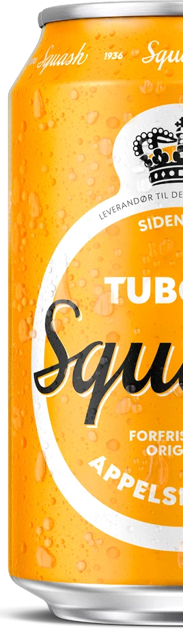
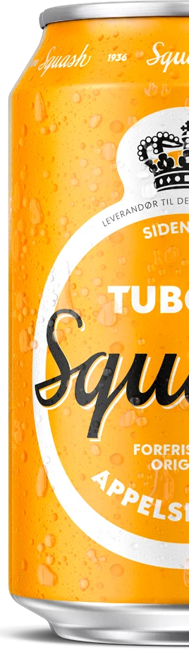
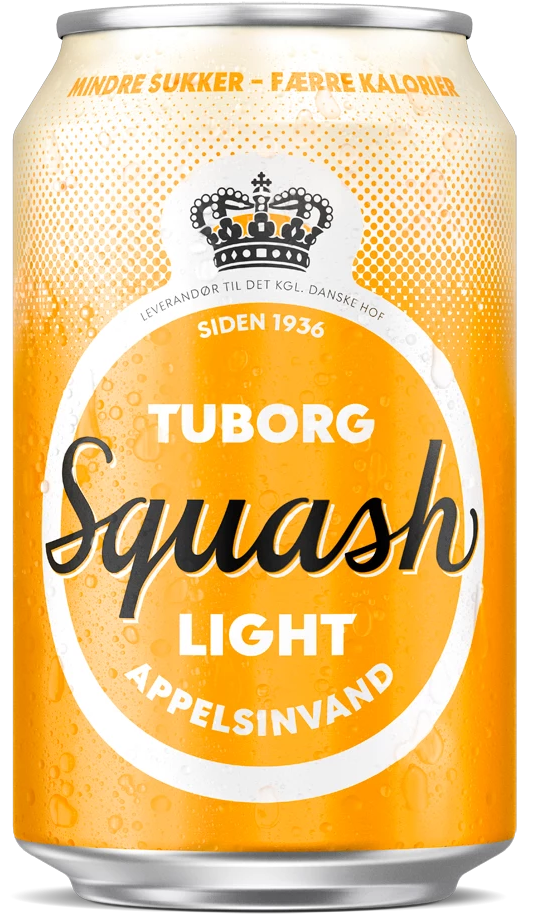

1936

1936.... Parkometeret bliver opfundet. Danmark sætter kulderekord i juni Måned. Men vigtigst af alt, så bliver de første dråber Squash tappet d. 5 august 1936 og hældt på flaske.
Siden da har Tuborg Squash altid været en stor favorit blandt det danske folk.
Undervejs er Tuborg Squash blevet understøttet af flere sjove reklamer. Herunder "skvash" reklamen med Finn & Jacob.
2022

Tuborg Squash er stadig at finde på hylderne i de danske butikker.
Nu om dage findes den både i en udgave med og uden sukker. Nemlig vores Tuborg Squash Light.
Der er dog sket mange ændringer med designet og senest lavede vi en stor rebranding af Squash.
Men bare rolig... Smagen er og forbliver den samme!
Squash på Ros(kilde)
Vind et års forbrug af Tuborg Squash
Vær med i konkurrencen om et års forbrug af Tuborg Squash!
Alt du skal gøre er at hive fat i din bedste Squash Buddy og tage et billede med din Tuborg Squash foran orange scene på Roskilde Festival.
Når du har gjort det uploader du billedet til Instagram og bruger hashtagget: #squashpåros.
Så er du med i konkurrencen.
 

Vidste du?
Squash?
Ja det hedder den godt nok og tro det eller ej så er der ikke grøntsagen squash i Tuborg Squash sodavanden.
Navnet kommer tvært imod fra det engelske ord ”Sqeezed”, som betyder at presse. I denne sammenhæng at presse appelsiner.
Ordet har fået et twist og er blevet til det velkendte navn Squash.
DK's ældste
Tuborg Squash er Danmarks ældste sodavand som stadigvæk er i produktion.
Den blev første gang introduceret til det danske marked tilbage i 1936.
I dag er det en folkekær og traditionsrig sodavand som mange danskere stadig nyder at drikke.
Squash Light
Tuborg Squash Light udgik fra sodavandssortimentet i en længere årrække.
Dog savnede i den så meget at vi i 2021 genindførte den i vores sortiment så den igen er tilgængelig.
Derfor kan du nu finde både den traditionelle Tuborg Squash, samt Tuborg Squash light på hylderne i de danske butikker.
Mød Familien

Med eller uden sukker?
?
